Ochronniki słuchu na strzelnicę – przewodnik po tym co mam w torbie gdy jadę strzelać (2025)
2025-10-19
Ochronniki słuchu.
Dlaczego warto wybrać dobre ochronniki słuchu?
Huk strzału z
broni palnej to nie tylko dyskomfort – trwała utrata słuchu grozi nawet po krótkiej sesji bez
ochrony słuchu na otwartej strzelnicy, a w zamkniętej hali ryzyko jest jeszcze większe. Mądrzy
strzelcy wiedzą dziś, że z słuchem nie eksperymentuje się ani za pierwszym, ani za setnym razem.
Dobre ochronniki to podstawa – pytanie tylko: jakie wybrać oraz czy warto oszczędzać, by zaraz
kupować drugi model? (ps. używanie wystrzelonych łusek po 9 para to nie ochrona słuchu) 🙂
1. Rodzaje ochronników słuchu – co znajdziesz na rynku?
a) Słuchawki aktywne – elektroniczne
To obecny złoty standard –
mikrofony zbierają dźwięki otoczenia i je wzmacniają, a w momencie strzału system
natychmiast „tnie” hałas do bezpiecznego poziomu. Dzięki temu słyszysz
rozmowy, komendy i sygnały na strzelnicy, ale Twój słuch zawsze jest pod ochroną. Modele
premium mają zaawansowane przetwarzanie dźwięku (stereo, kierunkowość, selektywność,
tryb polowania, tryb strzelnicy).
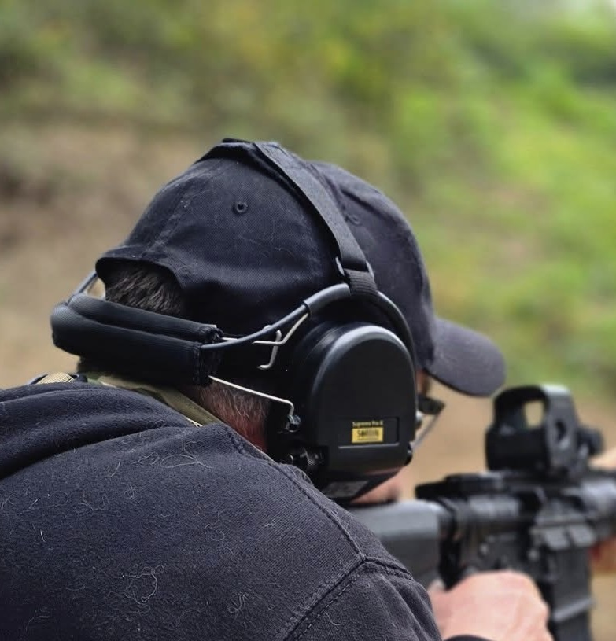
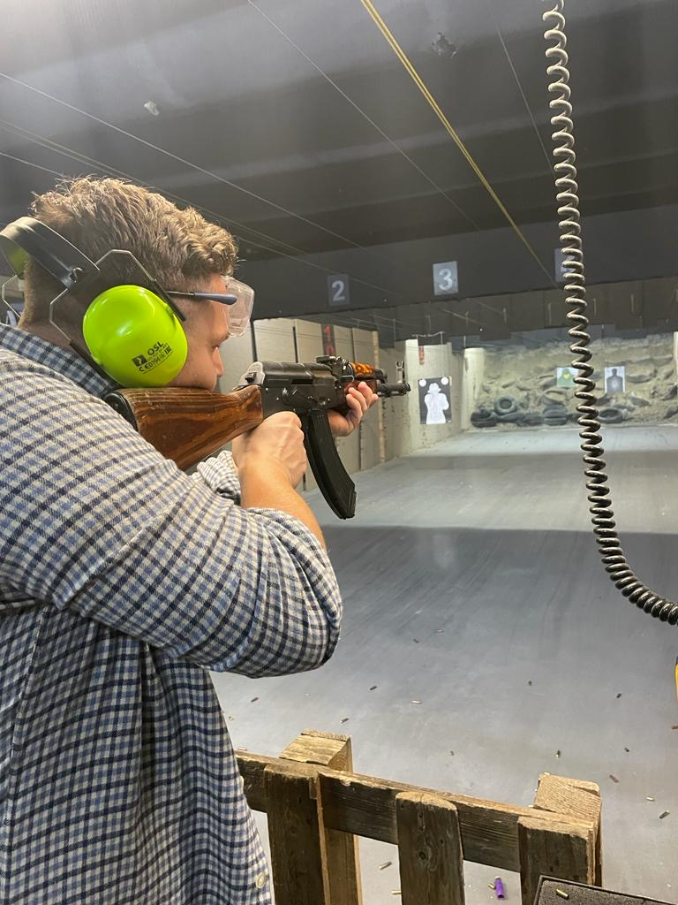
b) Słuchawki pasywne (klasyczne nauszniki)
Czysto mechaniczne, tańsze, polegają na tłumieniu przez materiały dźwiękochłonne. Bez mikrofonów, bez baterii – skuteczne czasem używane do podwójnej ochrony (np. z wkładkami).
c)
Douszne elektroniczne
Nowoczesne rozwiązanie łączące lekkość (wkładki!) i wysoką
ochronę. Hitem są zestawy jak 3M Peltor EEP-100 – idealne z nakryciem głowy, pod hełm, z
okularami, dla osób aktywnych i dużo ruszających się na strzelnicy.
W środowisku widać, że
temat ochrony słuchu idzie właśnie w stronę elektronicznych dousznych oraz slimmowanych
nauszników do dynamicznych konkurencji (IPSC, IDPA, PCC).
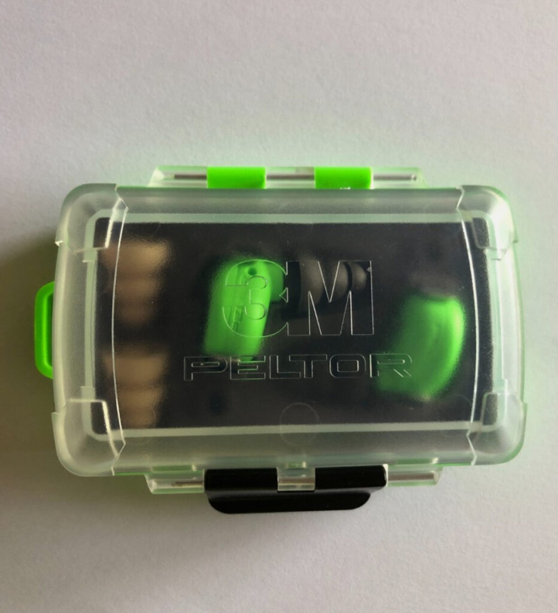
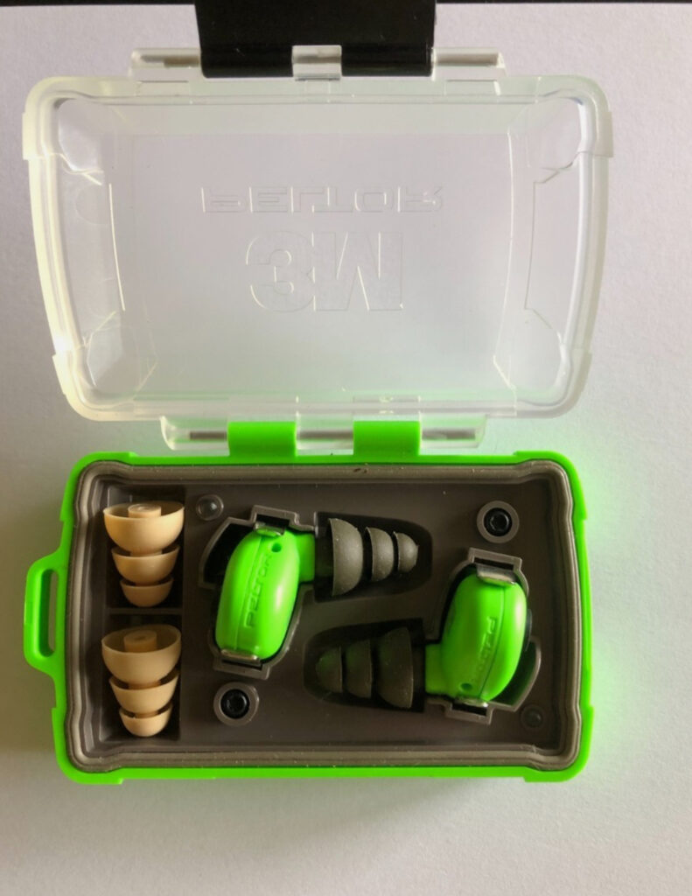
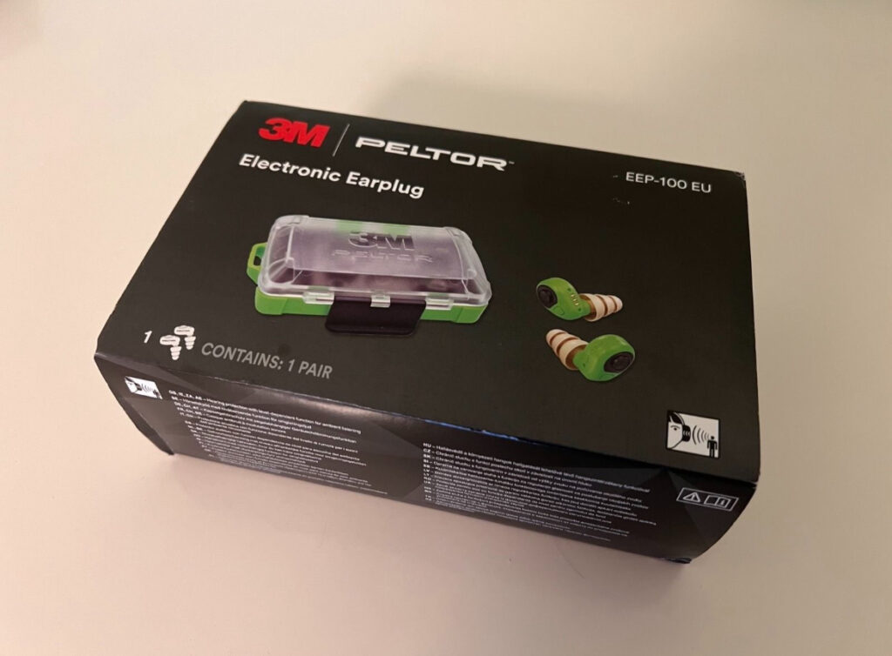
d)
Hybrydowe rozwiązania
Wkładki + nauszniki – do bardzo głośnej broni lub wnętrz
(double plug).
2. Technologia – jak wybrać „aktywne”, żeby były realnie skuteczne?
System Hear2, czyli klucz do Sordin Xpro
Sordin Supreme Pro (i Xpro)
to lider wśród aktywnych nauszników, naprawdę żeby to poczuć trzeba je ubrać:
- Dźwięk stereo, dwa mikrofony dla doskonałej orientacji,
- Filtry impulsowe – słychać świat (tryb polowania), nie słychać huku,
- Rewelacyjna wygoda (żelowe poduszki, niska masa),
- Komunikacja radiowa i top ergonomia na długie godziny.
3M Peltor
EEP-100 – przyszłość jest w uchu
Douszne aktywne ochronniki z prawdziwego
zdarzenia:
- Ultralekkie, ładowalne (etui powerbank),
- Idealne gdy konieczne są okulary/gogle lub hełm,
- Świetne do dynamicznych zawodów i dłuższych sesji,
- Wymienne końcówki dla higieny i wygody.
Impact Sport, Zohan (AliExpress) – czego oczekiwać od budżetowych konstrukcji?
- Realne tłumienie, lecz prostsza elektronika,
- Komfort dobry do krótkich treningów, gorzej przy dłuższych,
- Materiały szybciej się zużywają, nie zawsze łatwo wymienić gąbki,
- Brak zaawansowanych funkcji dźwięku jak w topowych Sordin czy 3M.
3. Porównanie modeli – tabela i recenzje tego co mam i co zdążyłem solidnie wyprobować.
| Model | Typ | Technologia | Wygoda | Tłumienie | Cena (PLN) | Plusy/Minusy | Zestaw higieniczny |
|---|---|---|---|---|---|---|---|
| Sordin Xpro | nauszne, aktywne | Hear2 | 10/10 | bardzo dobre | 1100–1500 | premium, komfort, mikrofony, komunikacja | TAK |
| 3M Peltor EEP-100 | douszne, aktywne | elektroniczne, ładowane | 9/10 | bardzo dobre | 800–1100 | super do hełmu, modele różne rozmiary, wygoda cało-dniowa, zestaw do wymiany końcówek | TAK |
| Zohan | nauszne, aktywne | Basic | 5/10 | średnie, dobre | 110–180 | tanie, do 1-2h bez bólu, po czasie ucisk uszu, raczej do okazjonalnych treningów | NIE |
| Impact Sport | nauszne, aktywne | Basic | 6/10 | średnie, dobre | 90–180 | tanie, łatwa obsługa, lekko szersza budowa, ucisk po dłuższym czasie | czasem, można naleźć na ali |
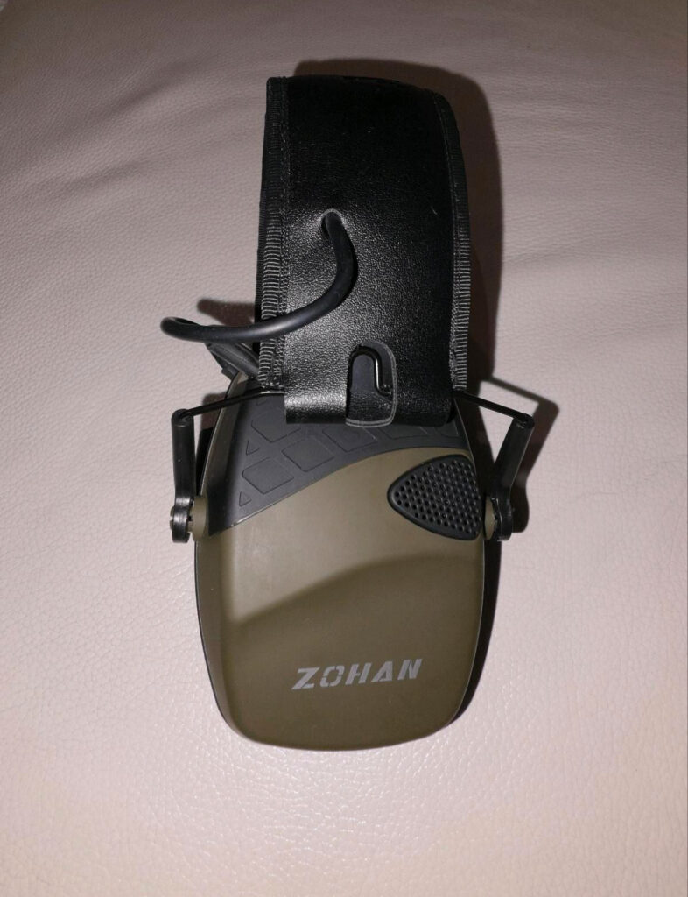
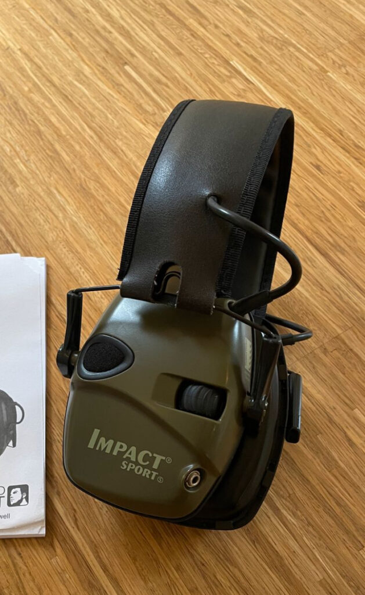
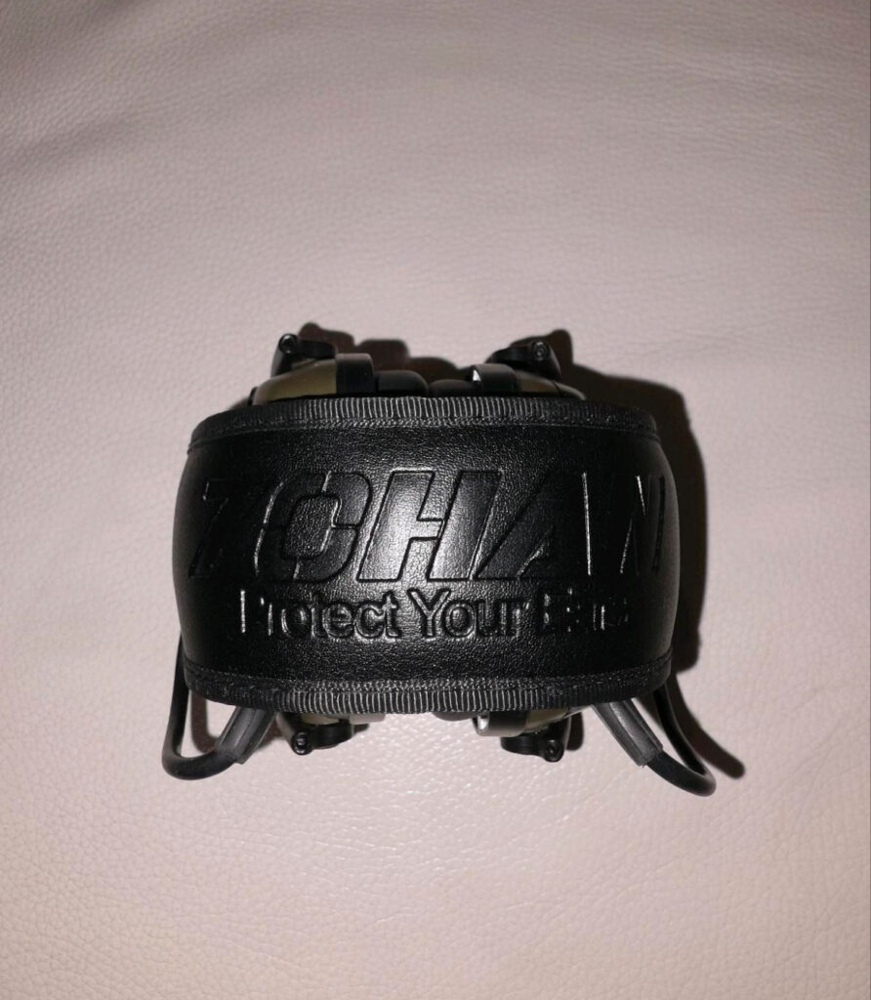
Mini recenzje :
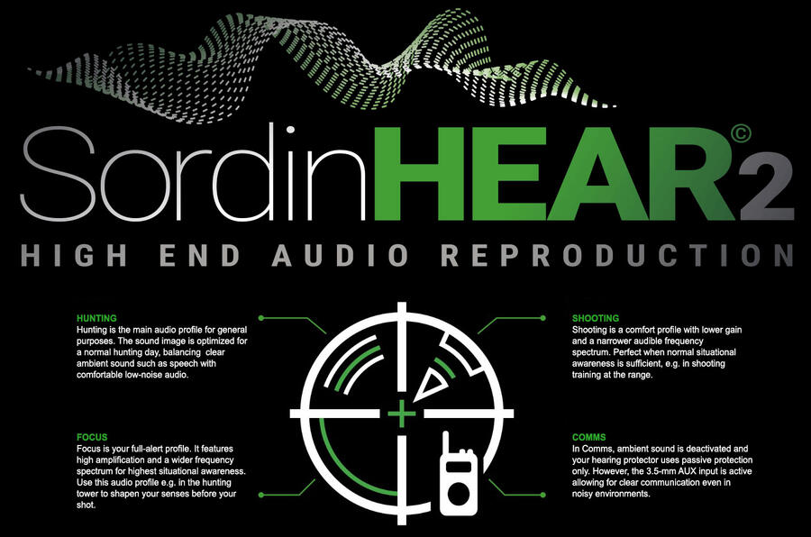
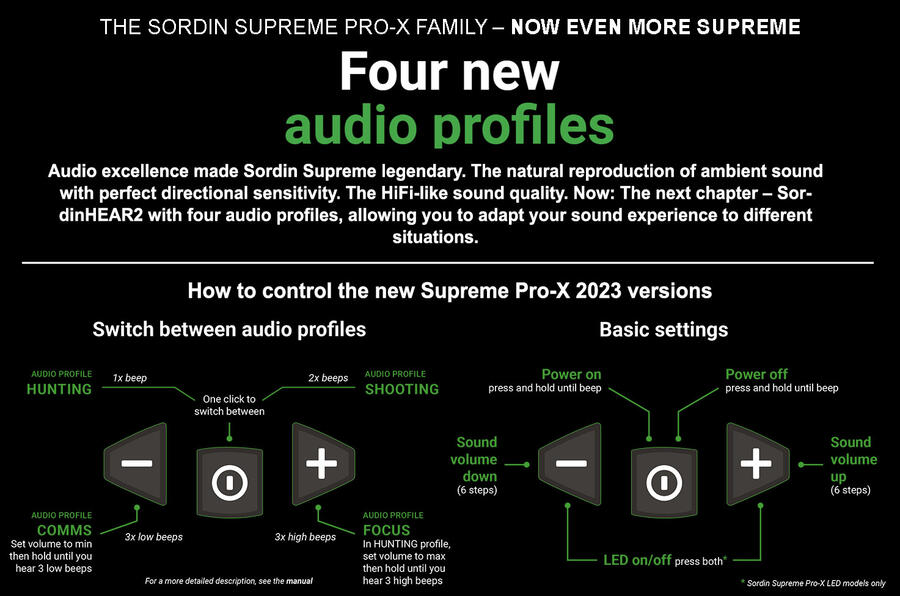
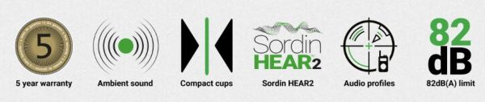
- Sordin Xpro: „Dla mnie Sordiny to wyznacznik komfortu i naprawdę sprzętu najwyższej jakości. Po kilku godzinach na osi nie czuć że masz słuchawki – żelowe wkładki spełniają swoją funkcję, zero ucisku. System Hear2 robi robotę szczególnie przy tłoku na strzelnicy gdzie strzela na raz 20 osób. Warte tych pieniędzy które trzeba za nie zapłacić , nie ma na rynku chyba nic lepszego.
- 3M Peltor EEP-100: „Od momentu jak je kupiłem korzystam z nich przy większości okazji, są bardzo wygodnie, lekkie ale nie tłumią, aż tak mocno jak Sordiny. Dla osób używających hełmu czy bardzo przytulonych do swojego karabinu, super rozwiązanie. Cena spora, ale jest trwałość, długi czas pracy na baterii, komfort i wygoda ładowania”.
- Impact Sport: „Budżetowe, ale dają radę na okazjonalnych wyjściach. Regulacja prosta, wytrzymują trochę potu i pyłu, choć po dłuższym noszeniu uszy czują zmęczenie, przynajmniej ja tak mam. To typowy wybór entry-level. Ja często mam je w torbie dla ludzi których zabieram na oś, a nie mają jeszcze własnego sprzętu”.
- Zohan: „trochę lepszy ale wciąż „budżet”, idealne na zapas lub jeśli zaczynasz z ograniczonym budżetem. Po dłuższym noszeniu czuć je na głowie, ale za tą cenę do niedzielnego pykania będą całkiem ok”.
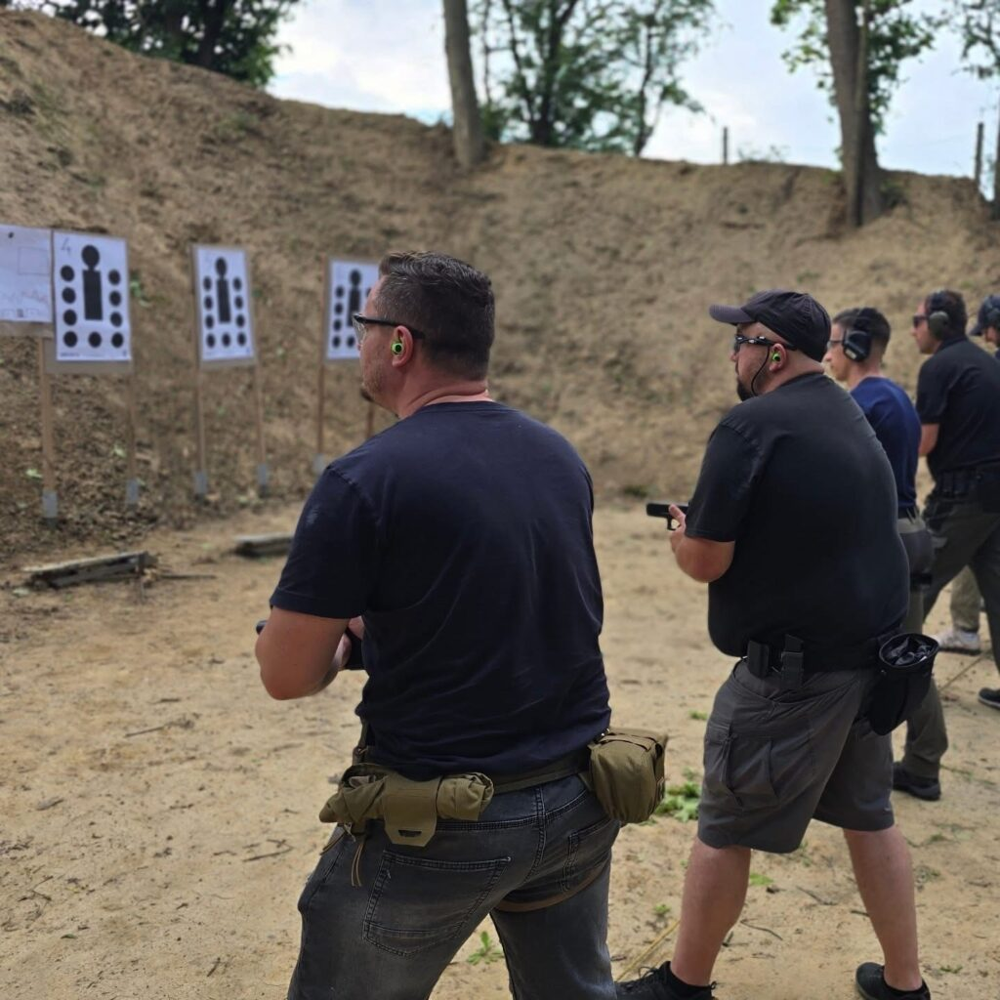
4. Wybór czy oszczędność? Czy warto „kupić raz a dobrze”?
Amerykańskie rankingi, fora i mój portfel są zgodne – jeśli planujesz dłuższą przygodę ze strzelectwem, kup raz, a dobrze, oszczędzisz sobie kłopotu z bólem uszu, dokupowania akcesoriów i nieprzyjemnych niespodzianek. Słuchawki za 100 zł sprawdzą się, ale jeśli strzelasz długo i powyżej kilka razu w miesiącu – inwestuj w klasy Sordin/MSA, Walker’s, Peltor, CENS.
Szukaj dobrych nausznych aktywnych albo dousznych, np. EEP-100, Peltor 500 to pewna ochrona, dostępność części, wysoki poziom komfortu.
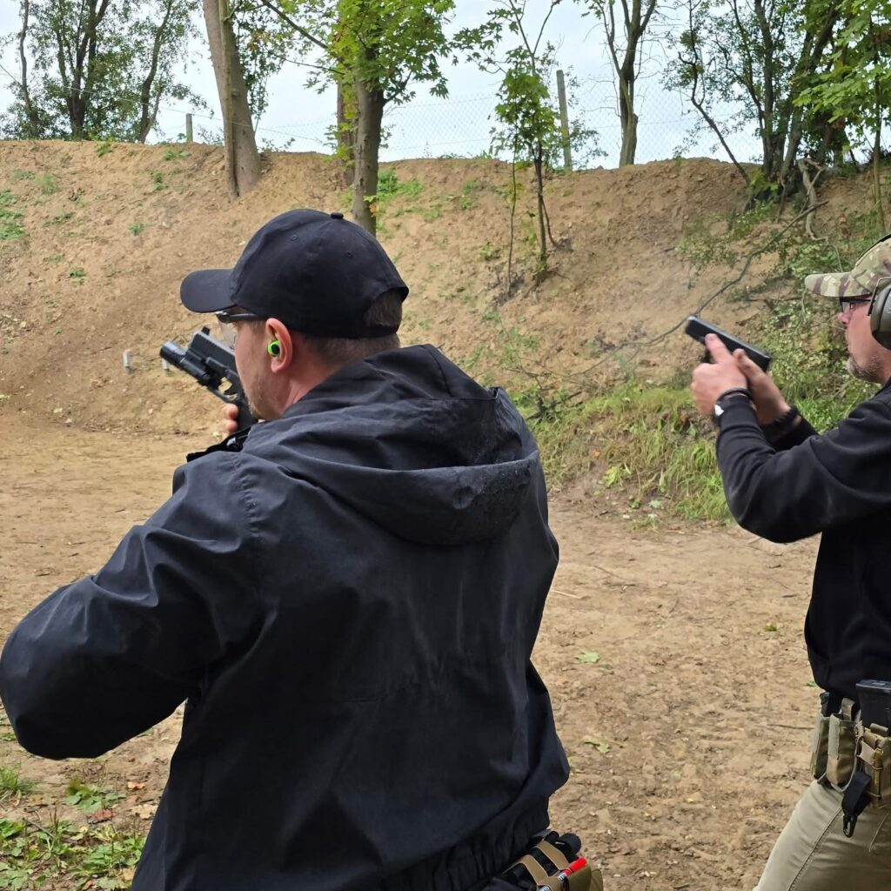
5. Wady i zalety różnych rozwiązań
Słuchawki aktywne:
-
- Świetna ochrona i orientacja (stereo, dźwięk „na żywo”)
- Możliwość rozmawiania, słuchania komend, podłączenia radia
- – Wyższa cena
- – Waga, nacisk, przy tanich modelach może być ucisk po dłuższym czasie użytkowania
- – Wersje budżetowe mają krótszy czas działania, trudniejsza wymiana poduszek
Douszne aktywne:
-
- Swoboda, idealne z hełmem, kompatybilność z okularami balistycznymi
- Komfort nawet na kilka godzin
- Możliwość szybkiej wymiany końcówek (higiena)
- – Cena niestety wysoka
- – Mniej skuteczne przy bardzo dużych kalibrach – warto dołożyć dodatkowe pasywne do „combo”
Pasywne:
-
- Cena
- Idealne do dodania jako druga warstwa w hali/profesjonalnych zastosowaniach
- – Brak rozmów, wszystko wyciszone, mogą uciskać po czasie
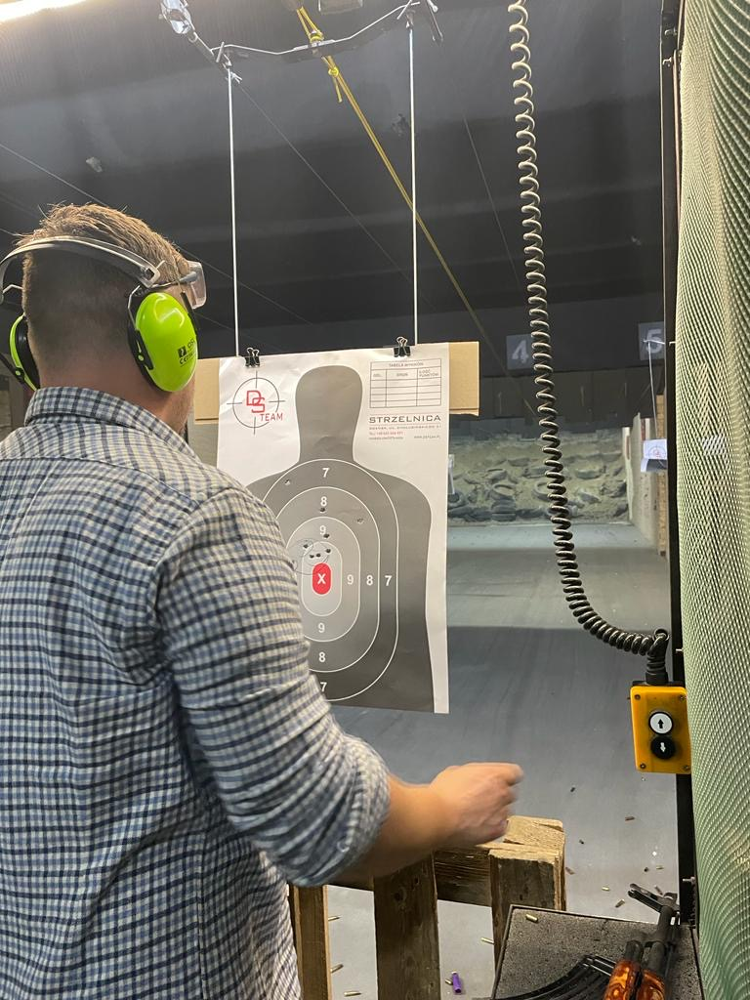
6. Zestawy higieniczne
- W renomowanych modelach (Sordin, 3M, Walker’s) wymiana padów/poduszek to standard – zapewnia higienę i przedłuża trwałość sprzętu.
- W modelach tanich – brak takiej opcji, sprzęt jest mniej długowieczny.
- Regularna wymiana zestawu poprawia tłumienie nawet o kilka dB.
7. Podsumowanie i rekomendacje
Jeśli strzelasz ciągle – nie kupuj dwa razy, wybierz najwygodniejszy model na jaki możesz sobie pozwolić. Douszne 3M EEP-100, Sordin Xpro czy MSA to realna różnica na wielogodzinnych zawodach, szkoleniach i treningach. Budżetowe modele – dla mnie tylko na awaryjne wyjścia albo na start dla kogoś, kto pojawi się na osi raz na kwartał.
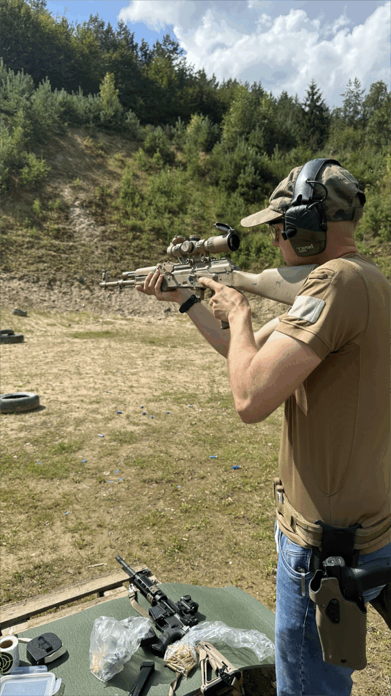
Kupuj
rozsądnie, testuj, sprawdzaj czy możesz wymieniać poduszki i czy nie uciska Cię nic po
godzinie użytkowania.
Uważam, że warto inwestować w droższy sprzęt.
Słuchu nie odzyskasz – a strzelnica nigdy nie zamieni się w bibliotekę.
tyle…
KuDłacz
#ŁączyNasCel